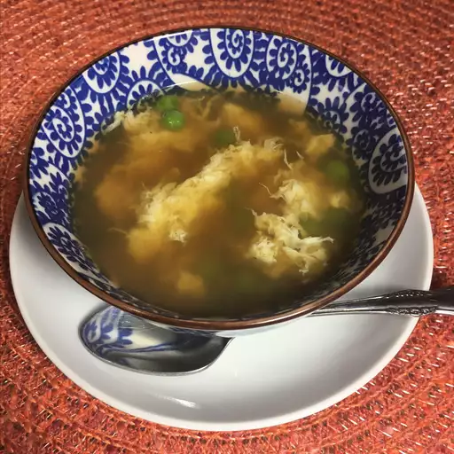

Chinese Egg Soup

Description
A very easy soup to make.Egg drop soup (or egg flower soup) is a Chinese soup that features silky strands of eggs in chicken broth. The beaten egg is whisked into the boiling broth at the end of cooking, creating delicate strands or flakes that float on top of the broth. It often has seasonings (like salt and white pepper), tofu, and/or some sort of green garnish.
Ingredients
- 1 cup chicken broth
- ¼ teaspoon soy sauce
- ¼ teaspoon sesame oil
- 2 teaspoons water (Optional)
- 1 teaspoon cornstarch (Optional)
- 1 egg, beaten
- 1 drop yellow food coloring (Optional)
- ½ teaspoon ground white pepper (Optional)
- ⅛ teaspoon salt (Optional)
- 1 teaspoon chopped fresh chives
Directions
- Combine chicken broth, soy sauce, and sesame oil in a small saucepan over medium heat; bring to a boil.
- Stir water and cornstarch together in a small bowl until cornstarch is dissolved; pour into boiling broth. Stir in food coloring. Slowly pour in beaten egg, stirring constantly; season with white pepper and salt. Serve hot, garnished with fresh chives.